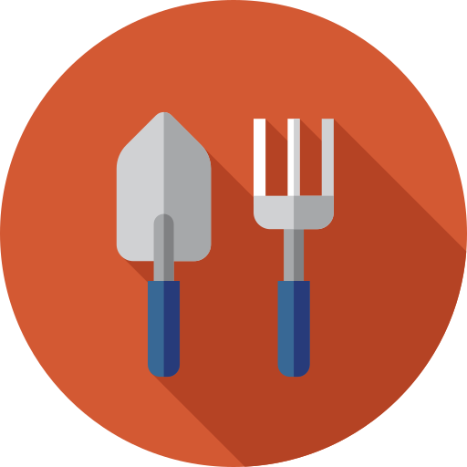

CAN YOU
Dig-It

Dig-It was created for gardeners who struggle to keep their plants strong and healthy. Dig-It saves lives.
Plug in your ZIP code at registration, and Dig-It will give you growing tips specific to your location.
Never forget to water, re-pot, or harvest your plants again!
Dig-It's extensive crowdsourced database gives details of any plant in the world!